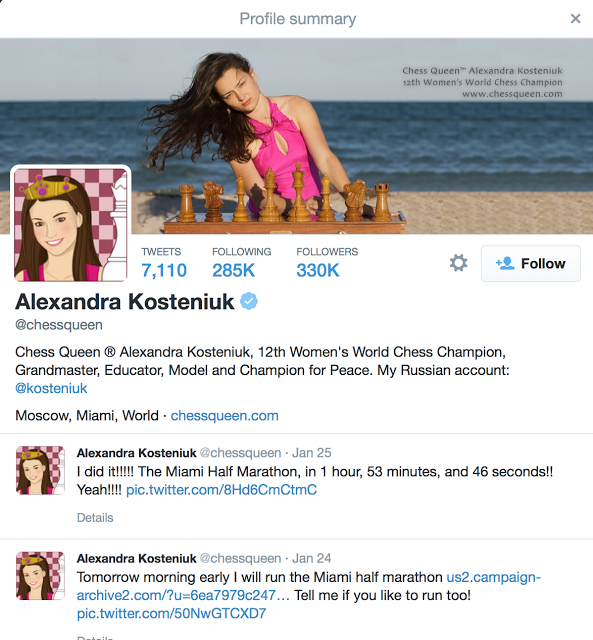
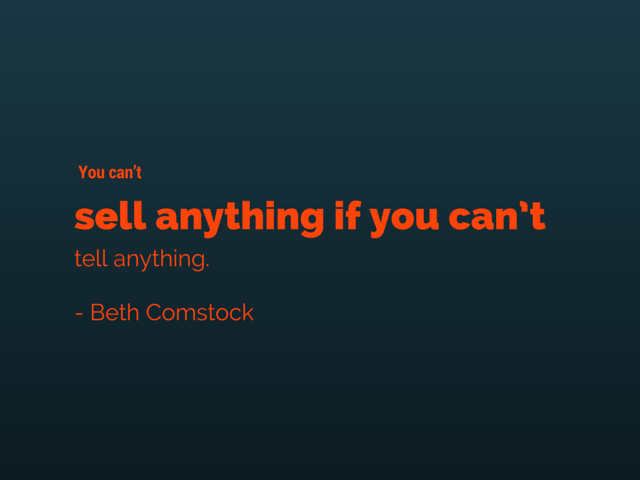

60 Simple Ways to Increase Your Twitter Followers
Tips To Gain Unlimited Twitter Followers Everyday
Do you require more Twitter followers for your businesses? Today, as the social networking sites like Twitter have become one more avenue of marketing, many businesses are trying to increase the number of followers in less time.
Here, we offer you some ways with which you can increase the number of followers on your page.
Get Yourself known on Twitter
1. Get Knowledge about Twitter Lingo
If you have just joined Twitter, the first thing you should know is the language which is used. As the platform develops, the lingo keeps changing. You can learn 10 Twitter basic definitions here.
2. Making a Good Bio
There are many people who check your bio before deciding about following you. You need to write briefly and concisely about the company and keep it friendly and add some quirky comments. Also, check your image thoroughly before uploading.
3 Keeping The Bio Current
You need to add current events or campaigns in the bio. For example, if you have made a new webinar, you can add a link in Twitter bio for your followers.
4. Publicize Your Twitter
Do the cross promotion of Twitter on various sites such as Facebook page, Google+ profile, Linkedin Page and where your business has a presence.
5. Promotion Of Twitter On Websites And Blogs
You can promote Twitter live feeds on your company websites and blog posts. You need to make sure that you have the “Follow” button on the website as well as blog posts.

6. Embedding The Best Tweets
Twitter allows the users to embed single tweets. You can code them on your blog as well as websites.
7. Promotion Of Twitter On Printed Materials
You can also include Twitter handle on any printed material which you distribute, such as print ads, flyers and business ads .
8. Inclusion Of The Twitter Handle In The Email Signature
You need to include the link to Twitter in email signatures when you include your website and phone number.
9. Tweet To People Each Day
Make it a daily routine to mention three new people on Twitter on a daily basis.
10. Use Twitter Account To Sign In Other Community And Forums
When you sign in on any community and forum, use your Twitter account to sign and comment on various blogs. If you are a successful blogger, your Twitter bio would be shown on that community site and you will get more followers.
11. Include Your Twitter Handle, When You Are Guest Blogger
If your business marketing strategy includes writing on other sites, always include Twitter handles in marketing bio.
12. Signing Up For Twitter Directories
Most of the people visit Twitter directories to search for interesting businesses and people. The signing up for directories are free and more people can follow you on this site. You can try sites like TweetFind, WeFollow and Twello.
Follow Businesses And People
13. Follow People Who Follow You
Check the bio of your followers and follow them back. This is will be great if you have a great Twitter following or you and your company are well known.
14. Follow The People Who Follow Similar People Like You
You should check Twitter’s “Who to Follow”, a list which is customized for you based upon your activity on the website. Then you can follow the people who do similar activities like you.
15. Follow Industry Leaders
Find the best Industry leaders as per your preference and follow and interact with them regularly.
16. Get An Industry Leader Or Celebrity To Follow You
For this, you need to connect to industry leaders on sites, mention them and retweet them to follow you. Always keep in touch so that they can retweet you.
17. Send Direct Message To New Followers
When you DM (direct message) a new follower, you will make them feel especially cared for. But, don’t use DM for spamming.
Use Hashtags
18. Using Hashtags
Twitter was the first among many social platforms which introduced hashtags which is still very popular with people today. You need to keep 3 maximum, or it may become spamming. You get only 140 characters.
19. Trending Hashtags
You need to keep an eye on trending hosts, so that when you see any trend related to your business, you need to enter your communication in that tweet chat by using the tag. Then, you can retweet in that hashtag with other people.
20. Using Campaign Specific Hashtags
You can also create a business specific hashtag or tweet community for your business. You can start a promotion so that your customers can relate to your company. When you are running a contest, you can use contest specific hashtags.
21. Using Of General Hashtag
If you want to extend the Twitter reach, you need to find out the common hashtags, which are related to your tweet topic. You can include the name of the location as a hashtag, if you are sending messages about the latest location of your store.
22. Search Hashtags And Business Related Keywords In Tweets
Search regularly for hashtags and business related keywords such as your company names in Tweets.
Use Best Practices
23. Be Informative
You need to be aware of the 80-20 rule while posting on Twitter. You need to post 80% content about your business and 20% about yourself.
24. Be Original
The posting of original content in your tweets will interest your followers and will increase interaction.
25. Be Inspiring
You should tweet inspirational quotes for better connection with your followers. They are the most retweeted contents on this social networking site.
26. Summary Of Your Blogs
When you write any blog on your website, you can quote summaries on Twitter and link them to your website to increase the visitors.
27. Tweeting About Breaking News
This social website is one of the best ways to get the latest news. You can use your comments on breaking news for tweeting about this site and get more followers in the process.
28. Having Queries
You can set the ball rolling by having any query and a large part of members who respond may become your future followers.
29. Share Images
Share beautiful and lovely images of your products and services on Twitter. With shared images and Twitters, you can get more followers.
30. Embed Videos
There are many people who like to see videos on Twitter. With your caption, you can get more followers and connections.
31. Repeat More Popular Tweet
Analyze the popularity of tweets individually. You can save them and send them at appropriate times again to keep the interest of followers.
32. Keeping Them Short
When you are tweeting, remember to keep them short and sweet. This is because; the attention of the readers is brief as per one study.
33. Ask For RTs
Ask your followers to retweet the RT. You can get more than 12% retweet when asking for a retweet.
34. Request For Retweets
When you tweet, you need to ask for retweet and spell it out. It will give you results exceeding 23%.
35. Avoid Auto-Tweets
Don’t post the same update of all social networking sites. Use the same topic, but rewrite for different social networking sites.
36. Avoid Rapid Tweets
Avoid tweeting continuously to the followers at online social sites. When you have some news, you can post it once or twice a day.
37. Become A Good Writer
You get only 140 characters to write, so you need to use them well.
38. Become A Great Headline Writer
The character limit of Twitter means you need to write great headlines so that your followers can read and enjoy it.
Engage Your Followers
39. Engage Your Customer
When writing on Twitter, you need to engage your customer, so he is attracted enough to check your website.
40. RT The Followers
Show your appreciation by rating your followers further on your page.
41. Post Twitters About Other Posts
When you find any blog post which mentions your business or products, you can tweet about the blog as well as the blogger.
42. Mention Great Customers As Well As Followers
You can mention the names of your customers as well as followers in your tweets to show your appreciation.
43. Use @mention
Use @mention which can be seen by your followers. For making it public, include “.” in front of it.
44. Check The Tweets Regularly
Most of the customers prefer to contact through their tweets. You need to check tweets regularly and answer them asap.
45. Respond To @mentions
If your followers have mentioned you or your products on the site, you need to give a prompt response.
46. Response To RT’s
When someone retweets your comment, respond quickly to their comments.
47. Collaboration With Other Companies
Give more information to customers with mention of your business partners in regular tweets. Also, retweet their message.
Use Of Awesome Marketing Tactics

48. Interact With Various Contests
Plan and upload various interactive contests to get more followers. You can also “follow-gated” for getting more customers.
49. Upload Regular Contests
Organize regular contests to attract and retain followers and keep those contests shared to attract new followers.
50. Offering Exclusive Deals
You can also promote your Twitter page by offering group deals from which customers can benefit only by following you.
51. Use Giveaways And Sweepstakes
Host the contests in which you can offer giveaways as well as sweepstakes only for the followers.
52. Promote Your Best Tweets
You can sponsor ads on social sites for the promotion of the best tweets. It has the ability to attract new followers.
53. Use Promoted Accounts And Trends
You need to use other Twitter and products for the promotion of hashtag trends and accounts.
54. Targeting Ads
You can target your ads as per interests and others for attracting new followers.
55. Launching Of New Product On Twitter Live
You can also host a special live event to launch a new range of products for your followers and advertise this event in advance on the site. In this way, you can also connect with your customers.
Monitor Results To Improve
56. Monitoring Results
You need to monitor results on Twitter on a regular basis. For that, you can use Twitter analytics.
57. Tracking Links
You should use links shorter such as Bit.ly for keeping track of the clicks.
58. Management Of Tweets After Office Hours
For tweeting outside office hours, you can use any social media management tool for scheduling your tweets.
59. Tweets On Weekends
Most of the members prefer to tweet on weekends, so you also need to connect with them on weekends.
60. Improvement In Tweets
Continuous improvement in your tweeting practices based upon the comments of followers and Twitter analytics.
Conclusion
Thus, these are essentially the simple 60 tips, which you can use for getting more followers.
If you found this article useful, could you hit the share button below so that others can benefit from it, too? Thanks!